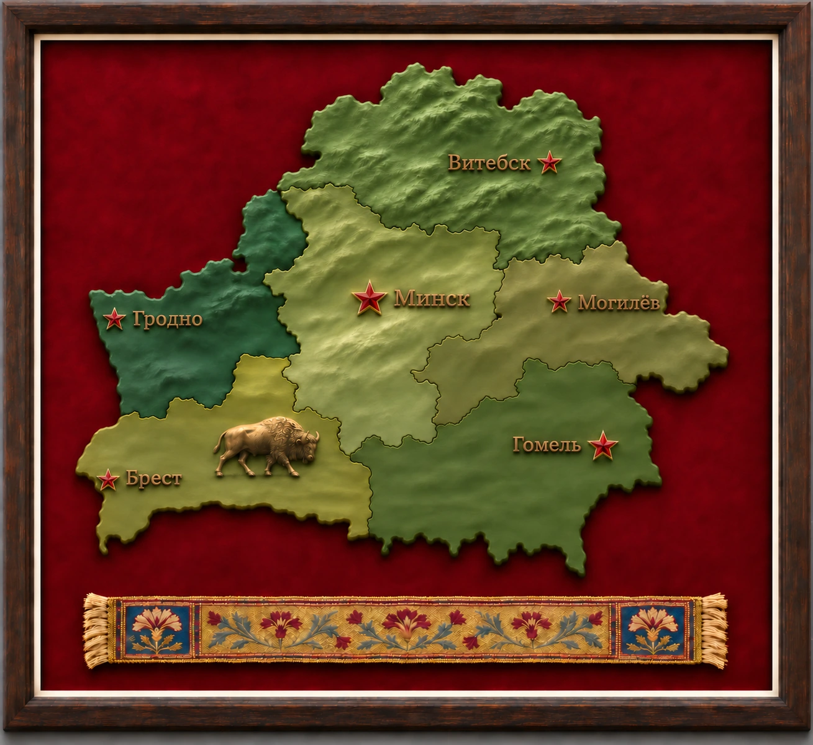

Производственный проект
Рельефная карта
Беларуси
Шесть печатных областей, рубиновые звёзды городов и бронзовый зубр. От первого слоя пластика до готового панно в деревянной раме.
- Карта
- 358 × 309 мм
- Наружная рама
- 450 × 420 мм
- Перепад по шкале
- 12 мм

Конструкция
Панно в сборе
Эскиз показывает отделку. Сборка построена из производственных моделей. Относительные высоты основаны на Mapzen Terrain Tiles. Шкала рельефа — 12 мм при базе 4 мм. После выравнивания площадок под декор максимальная толщина области составляет 14,63 мм. Источники рельефа
Палитра областей
Ориентир для пробной выкраски на загрунтованном PLA. Сравнивайте высохшие образцы при освещении готового панно.
В мастерской
Порядок изготовления
На одно панно
Материалы и смета
Укажите свои цены и расход. «Расход на изделие» учитывает использованную долю упаковки, «покупка с нуля» — целые упаковки. Остатки пригодятся для следующего экземпляра.
Спецификация материалов Количество и цены
| Материал и источник | Расход | Цена за ед., ₽ | На панно, ₽ | Закупка, ₽ |
|---|
Работа и оборудование Настраиваемые ставки
| Статья | Объём | Ставка, ₽ | На панно, ₽ |
|---|
Для производства
Файлы проекта
STL открываются в миллиметрах. В общем комплекте — модели, шаблоны 1:1, спецификация и техпроцесс. Исходные параметры открыты в репозитории.